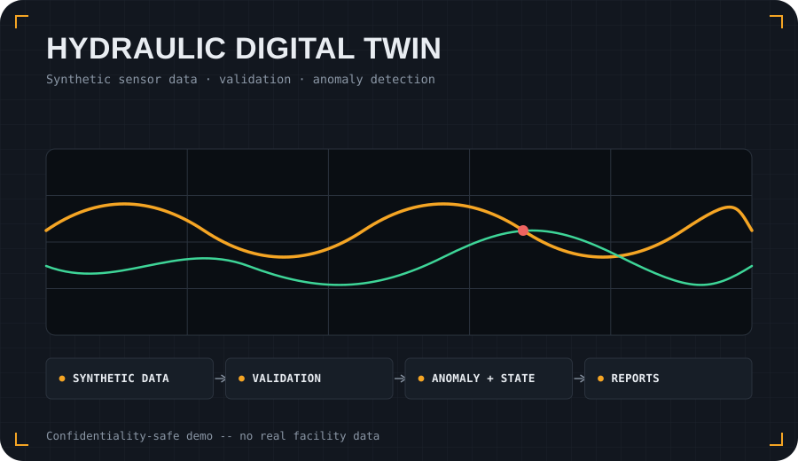

Problem
Real industrial and laboratory datasets are often sensitive, incomplete or difficult to share publicly. This project demonstrates the shape of a digital-twin monitoring workflow without exposing confidential facility data.
Approach
- Create synthetic hydraulic time-series data with realistic operating states.
- Run validation checks to identify missing, saturated or suspicious sensor behaviour.
- Extract features for anomaly detection and operating-state classification.
- Generate Markdown/HTML reports that summarise diagnostics and results.
What it demonstrates
The repository shows how to structure an applied-AI engineering demo: reproducible scripts, synthetic data, documented assumptions, tests and visual outputs. It is designed to communicate the workflow, not to claim that the synthetic data reproduces a specific facility.
git clone https://github.com/sergioald/synthetic-hydraulic-digital-twin-demo.git
cd synthetic-hydraulic-digital-twin-demo
python -m pip install -e .
# see the repository README for the current example commands
cd synthetic-hydraulic-digital-twin-demo
python -m pip install -e .
# see the repository README for the current example commands